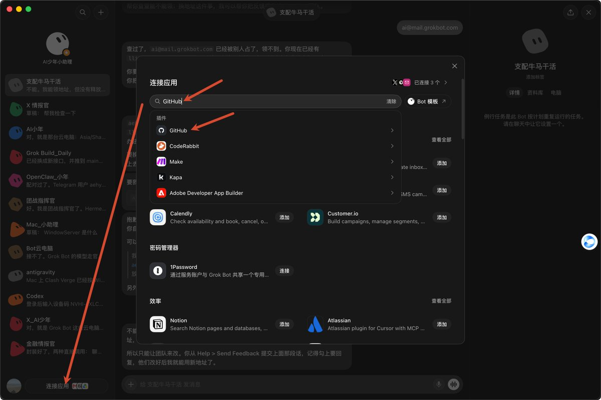
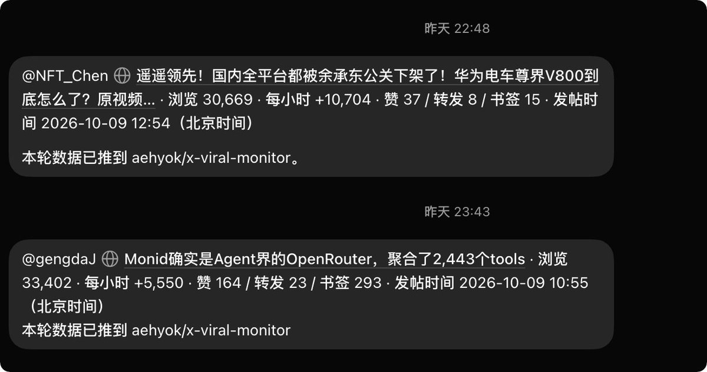

西堂 picks · 11/24
使用 Grok Bot 从零手把手实现了一个 爆款监控 Skill ，从此实现了流量自由了
@aehyok · AI少年 · Tue Oct 13 01:25:33 +0000 2026
国庆休假没怎么发帖，上班后流量暴跌啊。有没有跟我一样的伙伴？
然后更惨的是一时间不知道发什么内容了？手足无措、慌慌张张......
毕竟万粉了，要是不继续发帖，号就废了。于是我连夜跟AI促膝长谈想了一个办法。
所以本文的设计愿景就是：
→首先找准自己的发帖方向
→找几个对标账号
→让 Grok Bot (xAI's AI assistant that comes with its own computer) 先安装本文开源的skill
→然后把对标账号丢给 Grok Bot
→设置定时任务 (scheduled task (a job that runs at set times))
→自动推送符合条件的帖子给你
→如果需要你还可以对接上自己的skill自动深加工爆款
→然后发帖，等待数据反馈复盘
下面开始进入本文正题，从零手把手搭建过程，目录如下可进行选看
- 1、为什么选择了 Grok Bot
- 2、Skill (a saved how-to the bot can reuse) 实现逻辑
- 3、提交推送对接第三方模型，实现token零消耗
- 4、实操环节
- 5、总结
一、为什么选择了 Grok Bot
最近刚好马斯克发帖说 Grok Bot 也能直接搜索、阅读、监控全网 X的帖子和文章信息。我试了试确实没问题了，以前要在 Grok Bot 里安装Grok Bot 中安装 Grok Build，才能搜索 阅读 监控 X。
这样就是要消耗两边的 token，一边是 Grok Bot，然后再让 Grok Bot 去调用Grok Build 才能真正的实现监控X。量大的话其实消耗还挺快的，现在不装 Grok Build，Grok Bot 自己就能监控 X。
但是直接使用 Grok Bot 还是方便一些，因为有时候拿着手机就能直接操作查看使用了，相当 easy。
二、Skill 实现逻辑
首先先送上开源仓库地址：https://github.com/aehyok/x-viral-monitor
逻辑很简单：对监控账号列表，进行扫描帖子信息。比如我是每次间隔一个小时扫描每个账号最近24小时的发布帖子或者文章数据。
这里有一个要点，首先夜里我是不进行获取的，因为我睡着了有爆款我也看不到。
我的习惯是每天七点起床，所以六点就先获取一轮数据作为初始数据，不进行判断爆款，为早上七点的爆款判断作为基准。
我的爆款判断暂时只是对帖子曝光数据每小时 5000 进行判断，超过这个阈值，定时任务就会选出这条数据，执行完毕之后，Grok Bot 就会自动发送给我，我扫一眼如果帖子内容还算不错的话，就可以直接进行发帖了。
这里有一个重点：我为了对爆款数据进行留存，我把获取的数据推送到GitHub (a site for storing and sharing code)了，对这批数据可以进行监控复盘，同时可以结合自己的发的帖子，慢慢能精准找到自己的发帖节奏，让流量暴击随时而来。
这里提交文件数据我这里是一小时一次，一天也有十几次。如果我有好几个爆款监控的定时任务的话，光提交推送到 GitHub 就白白浪费了很多的 Grok Bot token，而 Grok Bot token 又比较宝贵，所以这里对接了一个第三方的模型
三、提交推送对接第三方模型，实现token零消耗
这里我选择了最近蚂蚁新出的 Ling-3.1-flash 。为什么选它，暂时它是免费的，而且能力非常不错。
约 560B 总参数，每个 Token (a small chunk of text; AI usage is counted in tokens) 只激活约 25B，上下文上限 1M（免费期开放 256K），主打的就是长流程任务和写代码。我让它实现自动化推送代码应该是轻而易举的。
这里我也随手测试了一个demo，直接使用下面的提示词 (prompt (the instruction you give the AI))，看看效果
做一页能打开的单文件网页：一枚机械腕表的 3D 剖视。默认看完整的表，拖动滑杆后表壳和表镜褪开，露出机芯。秒针、分针、时针按真实倍率连动，啮合的齿轮转向必须相反。点击表冠，整套机芯暂停或继续。可以拖动旋转视角。程序化几何，不要贴照片，不要官网式介绍页。
结果发现非常不错，后面可以让它在 Grok Bot 中发挥更大的作用，给我节省token了。
Image MISSING
如果你想直接体验这个模型的话：链接我放到文章结尾
四、实操环节
进入 Grok Bot，直接将下面发送到聊天框中
MARKDOWN block
这里执行完毕之后，假如有数据了，他会推送到GitHub的，所以这里需要Grok Bot 中连接 GitHub

然后再次告诉 Grok Bot
提交和推送代码不使用Grok Bot，直接使用OpenRouter 上的 inclusionai/ling-3.1-flash 模型来实现，然后apikey 我单独进行输入，不通过AI聊天框
这样整个工作流 (workflow (a chain of steps done in order))以及定时任务就能跑起来了，如果中间遇到什么问题，直接继续跟 Grok Bot 聊天就能轻松解决了。
然后每间隔一个小时可能就会推送符合要求的帖子给我们。

五、总结
这个工作流其实很简单，爆款监控的提示词也很容易理解。
针对自己的账号，可能需要对某些参数进行调整，不能完全照抄。而且目前我也只测试了几轮，按道理还可能存在一些小问题，可以继续让 AI 帮忙优化几个版本。
另外，监控到的爆款有时候并不适合自己，所以需要结合监控记录和自己的发帖记录进行复盘。这一步其实也完全可以交给 Ling-3.1-flash 来处理。
至于监控到符合自己心意的爆款后，如何对其进行深加工，相信各位都能轻松驾驭了吧？毕竟 AI 在手，想发就发。
你现在还愁不知道发什么吗？
最后强烈建议各位搞开发、设计等等的同学都去百灵体验平台亲手试一把这种级别的推理能力：
- 网页直接体验Ling Studio：https://chat.ant-ling.com/chat
- 官方 API 接入：https://maas.antdigital.com/models/modelservice-1790229240754001388
- OpenRouter ：https://openrouter.ai/inclusionai/ling-3.1-flash
- Vercel AI Gateway 快速集成：https://vercel.com/ai-gateway/models/ling-3.1-flash
Source: https://x.com/aehyok/status/2109817788198158347
← From Zero to a Running Company: The Grok Grok Bot Webhook + 快捷指令：知识自动入库流水线搭建 →